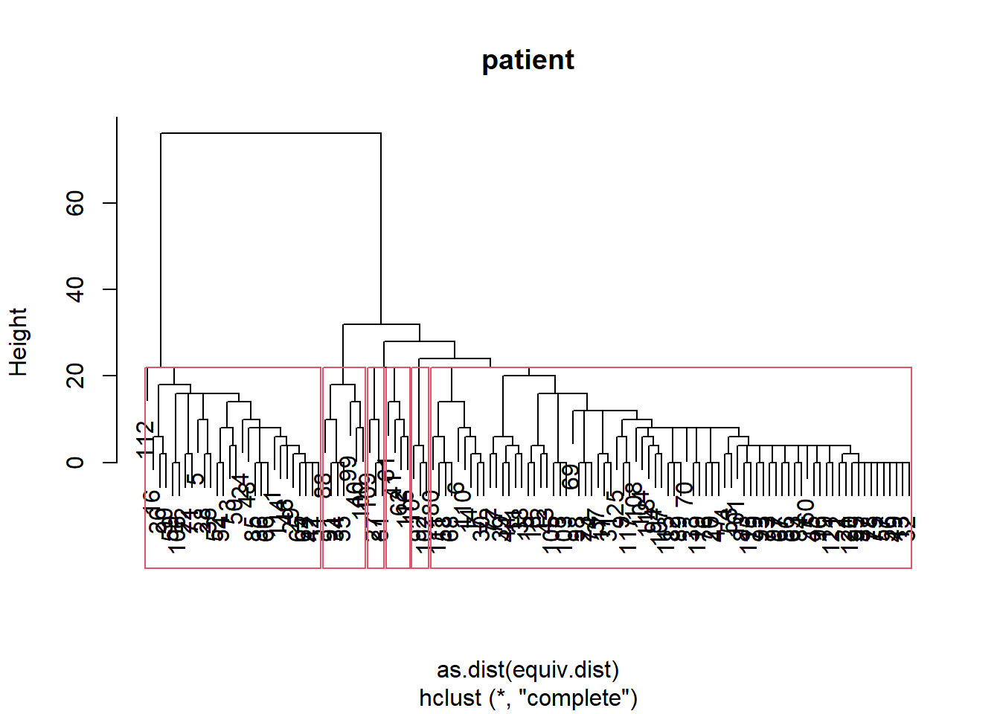
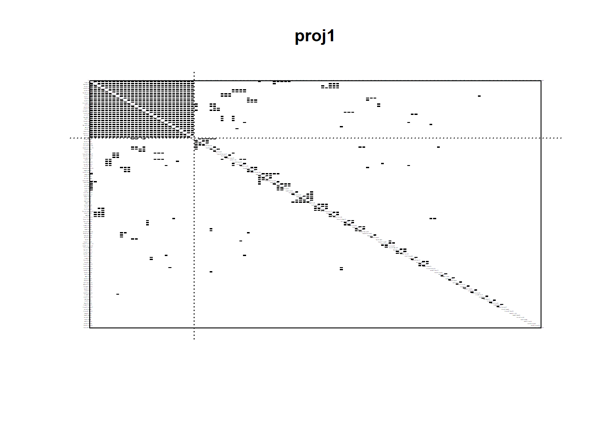
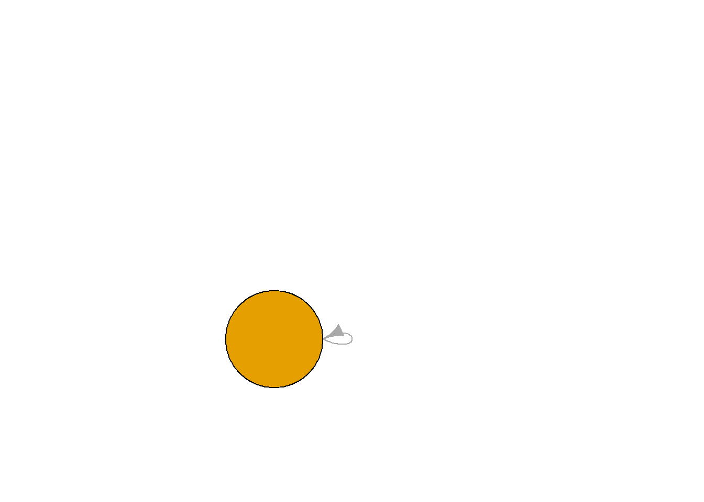
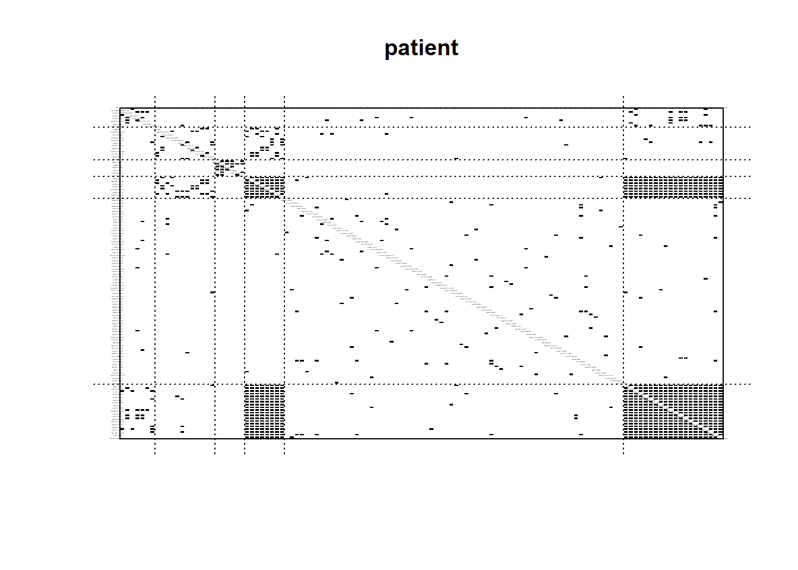
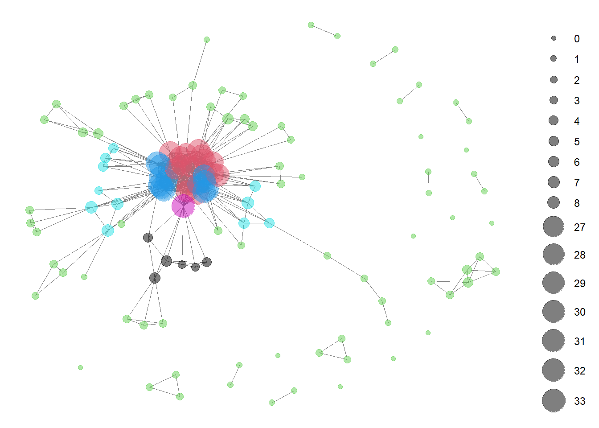

library(tidyverse)
library(readr)
library(igraph)
library(sna)
library(intergraph)
library(ggplot2)
library(patchwork)This post will explore the Synthetic Mass network data in more detail.
Read in Data
pat_attr <- read_csv("post_one_data/pat_attr.csv",
col_types = cols(...1 = col_skip()))
pro_attr <- read_csv("post_one_data/pro_attr.csv",
col_types = cols(...1 = col_skip()))
encounters_cleaning <- read_csv("post_one_data//encounters_cleaning.csv",
col_types = cols(...1 = col_skip()))
encounter_attributes <- read_csv("post_one_data/encounter_attributes.csv",
col_types = cols(...1 = col_skip()))
encounters_el <- read_csv("post_one_data/encounters_el.csv",
col_types = cols(...1 = col_skip()))
encounters_st_3 <- read_csv("post_one_data/encounters.st.3.csv",
col_types = cols(...1 = col_skip()))
attribute_list <- read.csv("post_one_data/attribute_list.csv")Prep Data for Analysis
#combine pro and pat attr
pat_attr$type <- "PATIENT"
pro_attr$type <- "PROVIDER"
both_attr <- bind_rows(pat_attr, pro_attr)
head(both_attr)# A tibble: 6 × 7
NAME GENDER RACE MARITAL INCOME AGE type
<chr> <chr> <chr> <chr> <dbl> <dbl> <chr>
1 Avril120 Olson653 F white <NA> 482269 36 PATIENT
2 Norma469 Langosh790 F white <NA> 190464 25 PATIENT
3 Peggie783 Eichmann909 F white <NA> 78997 21 PATIENT
4 Ashlie138 Williamson769 F white M 6472 37 PATIENT
5 Christiane220 Ankunding277 F white <NA> 141475 24 PATIENT
6 Dione665 O'Kon634 F white M 482269 36 PATIENTCreate bipartite network with attributes
encounters.stat <- network(encounters_el,
directed = FALSE,
bipartite = TRUE,
matrix.type = "edgelist",
vertex.attr = attribute_list)#create igraph
encounters.ig <- graph_from_biadjacency_matrix(encounters.stat)encounters.stat2 <- asNetwork(encounters.ig)#encounters.se <- equiv.clust(encounters.stat, equiv.fun = "sedist", method = "euclidean", mode = "graph", cluster.method = "complete")
#Error: This function is suited for one-mode networks onlylibrary(dBlockmodeling)
#blk<-tmklm(encounters.stat, RC=8, CC=10, TLIMIT = 6)projected_graph <- bipartite_projection(encounters.ig)
adj_matrix1 <- as.matrix(as_adjacency_matrix(projected_graph$proj1))
proj1.stat <- asNetwork(projected_graph$proj1)
proj1.se <- equiv.clust(adj_matrix1,
equiv.fun = "sedist",
method = "hamming",
mode = "graph",
cluster.method = "complete")
names(proj1.se)[1] "cluster" "metric" "equiv.fun" "cluster.method"
[5] "glabels" "plabels" plot(proj1.se, main = "Proj1")
rect.hclust(proj1.se$cluster, k = 6)
blk_model.proj1.org <- blockmodel(adj_matrix1,
proj1.se, k = 2) blk_model.proj1.org$block.model Block 1 Block 2
Block 1 1.00000000 0.02880184
Block 2 0.02880184 0.01963534plot.block<-function(x=blk_mod, main=NULL, cex.lab=.00001,show_labels = FALSE){
plot.sociomatrix(x$blocked.data, labels=list(x$plabels,x$plabels),
main=main, drawlines = FALSE, cex.lab=cex.lab)
for (j in 2:length(x$plabels)) if (x$block.membership[j] !=
x$block.membership[j-1])
abline(v = j- 0.5, h = j- 0.5, lty = 3, xpd=FALSE)
}
plot.block(blk_model.proj1.org, main = "proj1")
# Load the igraph package
library(igraph)
# Create an igraph object from the blockmodel
g <- graph_from_adjacency_matrix(projected_graph$proj1, mode = "directed", weighted = FALSE)Warning: The `adjmatrix` argument of `graph_from_adjacency_matrix()` must be a matrix as
of igraph 1.6.0.# Plot the graph without labels
plot(g, layout = layout.fruchterman.reingold, vertex.label = NA, vertex.size = 100, edge.width = 1)
blks <- blockmodeling::optRandomParC(adj_matrix1,
k=6,
rep=10,
approaches="ss",
blocks="com")
Starting optimization of the partiton 1 of 10 partitions.
Starting partition: 1 1 1 1 1 1 1 1 1 1 1 1 1 4 1 1 1 1 1 1 1 1 1 6 1 1 1 1 1 1 1 1 1 1 1 1 1 1 1 1 1 1 1 5 1 1 2 1 1 1 1 1 1 3 1 1 1 1 1 1 1 1 1 1 1 1 1 1 1 1 1 1 1 1 1 1 1 1 1 1 1 1 1 1 1 1 1 1 1 1 1 1 1 1 1 1 1 1 1 1 1 1 1 1 1 1 1 1 1 1 1 1 1 1 1 1 1 1 1 1 1
Final error: 275.4492
Final partition: 4 5 2 5 2 3 3 1 5 1 5 1 5 3 5 2 5 5 5 5 5 2 5 4 1 2 1 2 4 3 5 5 5 5 2 2 5 5 5 1 5 4 5 5 5 4 5 4 5 2 4 2 5 2 5 5 5 5 4 5 1 5 5 4 4 2 5 5 5 5 2 5 5 5 5 5 5 5 5 3 1 5 5 5 2 5 5 1 5 2 5 1 5 5 5 5 5 5 1 1 5 1 1 5 1 4 5 1 1 3 5 6 5 4 5 5 5 5 5 5 5
Starting optimization of the partiton 2 of 10 partitions.
Starting partition: 4 3 6 6 6 1 5 6 3 5 6 5 1 5 3 6 4 4 4 1 4 2 6 1 5 3 4 2 1 3 4 4 6 3 5 3 5 1 2 4 4 5 6 1 3 3 3 4 2 1 5 2 6 4 3 2 3 1 2 4 5 1 4 5 2 2 3 4 1 1 3 4 1 1 6 5 5 5 2 6 5 3 4 6 2 1 4 4 1 5 4 6 5 3 6 5 2 5 2 5 6 2 6 2 2 1 3 3 2 2 3 2 2 1 6 3 2 6 1 6 1
Final error: 281.4378
Final partition: 2 4 2 4 2 4 4 1 4 1 4 1 4 4 4 5 4 4 4 4 4 6 4 6 1 5 4 5 2 4 4 4 4 4 5 2 4 4 4 1 1 6 4 4 4 6 4 6 4 5 6 5 4 5 4 4 4 3 5 4 1 1 4 6 6 2 4 3 4 4 6 4 4 4 4 4 4 4 4 3 4 4 4 4 2 4 4 1 4 5 4 1 4 4 4 4 4 4 1 1 4 1 1 4 1 5 4 1 4 4 3 6 4 6 4 1 4 4 4 4 4
Starting optimization of the partiton 3 of 10 partitions.
Starting partition: 4 1 1 5 5 6 6 6 2 1 2 3 5 4 2 4 6 1 6 2 4 1 2 1 6 1 5 6 3 4 2 6 3 6 2 4 3 5 1 1 5 4 3 6 4 1 6 6 4 5 2 4 5 3 1 2 6 1 6 1 2 4 6 1 2 4 5 5 3 4 6 3 4 3 3 5 4 2 1 5 4 3 1 3 5 6 2 4 5 5 2 3 3 5 2 1 4 1 6 6 4 3 2 5 1 2 3 5 5 3 2 2 3 3 5 4 6 2 3 3 1
Final error: 278.1989
Final partition: 4 3 4 3 4 3 3 2 3 2 3 3 3 3 3 4 6 3 3 3 3 5 3 4 2 4 2 4 4 3 6 3 3 6 4 5 6 3 3 6 2 4 3 3 3 4 3 4 3 4 4 4 3 4 6 3 3 3 5 3 1 2 3 4 4 5 3 3 3 3 5 3 3 3 3 3 3 3 3 3 2 3 3 3 5 3 3 6 3 4 6 2 3 3 3 3 3 3 6 3 3 2 2 3 2 5 3 3 1 3 3 4 3 4 3 2 3 3 3 3 3
Starting optimization of the partiton 4 of 10 partitions.
Starting partition: 6 5 2 3 2 4 3 5 1 1 2 6 1 4 1 3 5 2 4 6 3 3 2 4 5 3 2 3 3 4 5 2 1 4 5 1 3 5 1 5 4 1 5 4 2 2 3 4 3 4 3 3 6 6 2 4 2 5 6 1 3 4 1 6 4 4 6 4 2 5 1 3 6 2 1 2 2 6 5 6 6 5 3 1 6 1 1 6 1 4 3 2 1 5 1 4 2 5 3 5 4 6 2 3 2 6 3 5 1 1 4 6 2 6 5 5 4 6 5 2 6
Final error: 283.2838
Final partition: 6 5 6 5 6 1 1 2 5 4 1 1 5 1 1 3 1 1 5 5 5 3 1 6 4 3 4 6 6 1 1 5 5 1 6 3 1 1 1 1 4 6 1 1 5 6 5 6 5 6 6 6 5 6 1 5 5 1 3 5 2 4 5 6 6 3 5 1 5 4 3 1 5 1 5 5 1 5 5 1 4 1 5 5 3 5 5 1 1 3 1 4 5 5 5 5 5 1 1 5 5 4 2 5 2 3 5 5 2 1 1 6 1 6 5 4 5 5 5 5 5
Starting optimization of the partiton 5 of 10 partitions.
Starting partition: 1 5 2 6 4 4 3 2 1 3 4 1 3 4 1 2 5 6 6 2 2 1 6 6 4 4 1 5 3 6 1 3 3 4 5 4 2 6 6 6 3 1 3 6 1 3 5 5 1 3 2 5 2 1 6 5 1 4 6 5 1 1 1 6 5 4 2 6 4 5 6 4 4 3 6 3 1 3 1 5 6 5 1 4 3 2 4 1 3 2 3 2 1 1 1 5 6 6 2 4 6 1 3 6 4 1 3 5 1 1 4 5 3 6 5 3 3 4 5 2 2
Final error: 280.2381
Final partition: 5 4 2 4 2 3 3 3 4 3 4 3 4 3 3 2 3 3 4 1 4 5 3 2 3 2 1 2 2 3 3 4 3 3 2 5 3 4 4 3 4 2 3 4 4 2 1 2 4 2 2 2 4 2 3 4 4 4 5 4 6 6 4 2 2 5 4 4 4 4 5 4 4 3 4 1 4 4 4 3 1 4 4 4 5 4 4 3 4 2 3 3 4 4 4 4 4 3 3 3 4 3 3 4 3 5 4 4 6 3 4 2 4 2 4 6 4 4 3 4 4
Starting optimization of the partiton 6 of 10 partitions.
Starting partition: 5 5 5 5 5 5 5 5 5 5 5 5 5 5 5 5 5 5 5 5 5 5 5 5 5 5 5 5 5 5 5 5 5 5 5 5 5 5 5 5 5 5 5 2 5 5 5 5 5 5 5 5 5 5 5 5 5 5 5 5 5 5 5 5 5 5 5 5 5 5 5 5 5 5 5 5 5 5 4 5 5 5 5 5 5 5 5 6 3 5 5 5 5 5 5 5 5 5 5 5 5 5 5 5 5 5 5 5 5 1 5 5 5 5 5 5 5 5 5 5 5
Final error: 272.987
Final partition: 2 3 4 3 2 1 1 5 3 3 3 3 3 1 3 4 3 3 3 3 3 2 3 2 3 4 3 2 2 1 3 3 3 3 2 4 3 3 3 5 3 2 3 3 3 2 3 2 3 4 2 4 3 4 3 3 3 3 4 3 5 5 3 2 2 4 3 3 3 3 2 3 3 3 3 3 3 3 3 1 3 3 3 3 4 3 3 5 3 4 3 3 3 3 3 3 3 3 5 5 3 3 5 3 5 4 3 3 5 1 3 6 3 2 3 5 3 3 3 3 3
Starting optimization of the partiton 7 of 10 partitions.
Starting partition: 6 6 6 6 6 6 6 6 6 6 6 6 6 6 6 6 6 6 6 6 6 6 6 6 3 6 6 6 6 4 6 6 6 6 6 6 6 1 6 6 6 6 6 6 6 6 6 6 6 6 6 6 6 6 6 6 6 6 2 6 6 6 6 6 6 6 6 6 6 6 6 6 6 6 5 6 6 6 6 6 6 6 6 6 6 6 6 6 6 6 6 6 6 6 6 6 6 6 6 6 6 6 6 6 6 6 6 6 6 6 6 6 6 6 6 6 6 6 6 6 6
Final error: 292.7175
Final partition: 3 2 4 2 4 2 2 6 2 6 2 2 2 2 2 4 2 2 2 2 2 3 2 1 6 4 2 5 3 2 2 2 2 2 4 4 2 2 2 6 6 3 2 2 2 3 2 3 2 5 3 5 2 5 2 2 2 2 5 2 6 6 2 3 3 4 2 2 2 2 1 2 2 2 2 2 2 2 2 2 2 2 2 2 4 2 2 6 2 4 2 6 2 2 2 2 2 2 6 6 2 6 6 2 6 5 2 6 6 2 2 1 2 3 2 6 2 2 2 2 2
Starting optimization of the partiton 8 of 10 partitions.
Starting partition: 4 4 4 6 4 1 4 4 4 5 4 4 4 2 4 4 4 4 4 4 4 4 4 4 4 4 4 4 4 4 4 4 4 4 4 4 4 4 4 4 4 4 4 4 4 4 4 4 4 4 4 4 4 4 4 4 4 4 4 4 4 4 4 4 4 3 4 4 4 4 4 4 4 4 4 4 4 4 4 4 4 4 4 4 4 4 4 4 4 4 4 4 4 4 4 4 4 4 4 4 4 4 4 4 4 4 4 4 4 4 4 4 4 4 4 4 4 4 4 4 4
Final error: 290.249
Final partition: 5 6 5 6 2 6 6 4 6 6 6 4 6 6 6 3 6 6 6 6 6 2 6 2 6 3 6 2 5 6 6 6 6 6 2 5 6 6 6 4 4 1 6 6 6 1 6 1 6 3 1 3 6 3 6 6 6 6 3 6 4 4 6 1 1 5 6 6 6 6 2 6 6 6 6 6 6 6 6 6 6 6 6 6 5 6 6 4 6 3 6 6 6 6 6 6 6 6 4 4 6 6 4 6 4 3 6 4 6 6 6 2 6 1 6 4 6 6 6 6 6
Starting optimization of the partiton 9 of 10 partitions.
Starting partition: 1 6 4 3 2 2 3 3 6 5 4 4 3 1 5 1 4 5 5 2 1 5 2 2 3 4 4 6 4 1 6 6 5 4 4 1 5 2 1 6 6 6 6 1 4 2 5 4 3 2 6 1 6 5 4 6 2 3 4 1 3 4 2 4 1 6 6 1 5 4 2 5 6 3 6 6 1 5 6 4 3 1 5 5 5 1 6 5 3 1 6 5 6 1 6 6 5 6 2 4 2 3 3 5 1 2 6 4 4 6 2 6 6 6 1 5 4 6 3 4 4
Final error: 283.7673
Final partition: 2 3 2 3 2 3 3 1 3 1 5 5 6 3 5 2 3 5 3 3 3 2 3 2 1 2 3 2 2 3 3 6 3 5 2 2 3 5 5 1 6 2 5 5 6 2 3 2 6 2 2 2 3 2 5 6 6 3 2 6 4 4 6 2 2 2 6 3 3 6 2 5 6 3 6 3 5 6 6 3 3 6 3 6 2 6 6 5 6 2 5 1 6 6 6 6 6 3 1 1 6 1 1 6 1 2 6 6 4 3 3 2 6 2 3 4 3 6 3 6 3
Starting optimization of the partiton 10 of 10 partitions.
Starting partition: 1 1 1 1 1 1 1 1 1 1 1 1 1 1 1 1 1 1 1 1 1 1 1 1 1 1 1 1 1 1 1 1 1 1 2 1 1 1 1 1 1 1 1 1 6 1 1 1 1 1 1 1 1 1 1 3 1 1 1 1 1 4 1 1 1 1 1 1 1 1 1 1 1 1 1 1 1 1 1 1 1 1 1 1 1 1 1 1 1 5 1 1 1 1 1 1 1 1 1 1 1 1 1 1 1 1 1 1 1 1 1 1 1 1 1 1 1 1 1 1 1
Final error: 282.3776
Final partition: 2 6 2 6 2 6 6 3 6 6 3 3 6 6 3 2 3 3 6 3 6 2 3 2 6 2 6 2 2 6 3 6 6 3 2 5 3 3 3 3 1 2 3 3 6 2 3 2 6 2 2 2 6 2 3 6 6 6 5 6 4 4 6 2 2 5 6 6 6 6 2 3 6 3 6 3 3 6 6 6 6 6 6 6 5 6 6 3 6 2 3 6 6 6 6 6 6 3 3 6 6 6 3 6 3 5 6 6 1 6 6 2 6 2 6 4 6 6 6 6 6
Optimization of all partitions completed
1 solution(s) with minimal error = 272.987 found. # blockmodel with optimized partition
blk_mod <- blockmodel(adj_matrix1, blks$best$best1$clu,
plabels = rownames(adj_matrix1))
# print blockmodel object
blk_mod$block.model Block 1 Block 2 Block 3 Block 4 Block 5 Block 6
Block 1 0.533333333 0.00000000 0.006578947 0.013888889 0.000000000 1
Block 2 0.000000000 1.00000000 0.021929825 1.000000000 0.018181818 1
Block 3 0.006578947 0.02192982 0.018947368 0.007675439 0.009569378 0
Block 4 0.013888889 1.00000000 0.007675439 1.000000000 0.250000000 1
Block 5 0.000000000 0.01818182 0.009569378 0.250000000 0.200000000 0
Block 6 1.000000000 1.00000000 0.000000000 1.000000000 0.000000000 NaNplot.block(blk_mod, main = "proj1",
cex.lab = .000001)
#assign block membership to vertex attribute
proj1.stat%v%"role"<-blk_mod$block.membership[match(proj1.stat%v%"vertex.names",blk_mod$plabels)]
#plot network using "role" to color nodes
GGally::ggnet2(proj1.stat,
node.color="role",
node.size=sna::degree(proj1.stat, gmode="graph"),
node.alpha = .5)Registered S3 method overwritten by 'GGally':
method from
+.gg ggplot2
Calculating centrality
types <- V(encounters.ig)$type
deg<- igraph::degree(encounters.ig)
bet <- igraph::betweenness(encounters.ig)
clos <- igraph::closeness(encounters.ig)
eig <- eigen_centrality(encounters.ig)$vector
const <- constraint(encounters.ig)
cent_df <- data.frame(types, deg, bet, clos, eig, const)
head(cent_df[order(cent_df$deg, decreasing = TRUE),], 10) types deg bet clos eig
Ted955 Reilly981 TRUE 28 27013.6588 0.0012239902 1.00000000
Timmy68 Nolan344 FALSE 7 885.6299 0.0007002801 0.02480592
Trula820 Johns824 FALSE 7 6649.9824 0.0010000000 0.20635920
Chun678 Hirthe744 FALSE 6 1404.0134 0.0009578544 0.24432907
Corey514 Gaylord332 FALSE 6 2402.5000 0.0009578544 0.19651997
Dennis979 Dickens475 FALSE 6 1785.4929 0.0009652510 0.22004854
Enola75 Tromp100 FALSE 6 758.6271 0.0009560229 0.29716393
Jacqualine965 Aufderhar910 FALSE 6 3265.0333 0.0010080645 0.22137300
Jed345 Muller251 FALSE 6 3019.5333 0.0010080645 0.22693121
Mamie949 Leannon79 FALSE 6 799.1374 0.0009560229 0.28361363
const
Ted955 Reilly981 0.03571429
Timmy68 Nolan344 0.14285714
Trula820 Johns824 0.14285714
Chun678 Hirthe744 0.16666667
Corey514 Gaylord332 0.16666667
Dennis979 Dickens475 0.16666667
Enola75 Tromp100 0.16666667
Jacqualine965 Aufderhar910 0.16666667
Jed345 Muller251 0.16666667
Mamie949 Leannon79 0.16666667Triad Dyad Census
triads_incidence<-igraph::triad_census(encounters.ig)Warning in igraph::triad_census(encounters.ig): At
vendor/cigraph/src/misc/motifs.c:1140 : Triad census called on an undirected
graph. All connections will be treated as mutual.triads_incidence [1] 8487860 0 159964 0 0 0 0 0 0
[10] 0 1300 0 0 0 0 0igraph::dyad.census(encounters.ig)Warning: `dyad.census()` was deprecated in igraph 2.0.0.
ℹ Please use `dyad_census()` instead.Warning: `dyad_census()` requires a directed graph.$mut
[1] 437
$asym
[1] 0
$null
[1] 69314igraph::transitivity(encounters.ig)[1] 0igraph::transitivity(encounters.ig, type = "global")[1] 0mean_distance(encounters.ig)[1] 6.166661Component Structure and Membership
names(igraph::components(encounters.ig))[1] "membership" "csize" "no" igraph::components(encounters.ig)$no # number of components[1] 22igraph::components(encounters.ig)$csize #Size of each component [1] 249 8 18 4 6 10 3 5 3 4 5 9 6 7 2 3 5 10 7
[20] 3 5 2degree.wt=igraph::strength(encounters.ig)